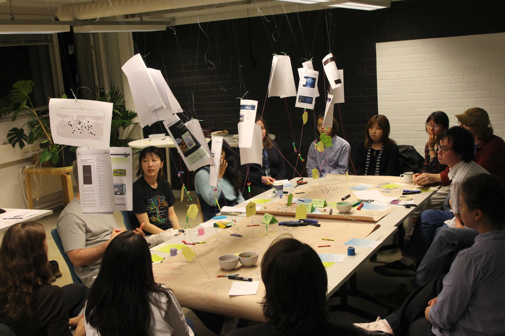
The collective cloud structure after the workshop — a physical data visualization made with paper, string, and beads. Helsinki Design Week / Designs for Cooler Planet, Space 21, Espoo, 2026.
Warm Clouds over the Cool Planet is a collective threading and prompt-making workshop exploring the bodily and ecological dimensions of data infrastructure. Held as part of Helsinki Design Week's Designs for Cooler Planet exhibition at Space 21, the workshop brought together participants to make visible what cloud technologies usually hide: the physical substrates, labor, and environmental costs underneath our digital everyday.
The workshop began with a short presentation introducing this history of the digital cloud and a round of introductions. Participants then drew their own personal relationships to cloud services on large sheets of kraft paper spread across tables. These drawings became the ground layer representing personal experience with the cloud.
In the second half of the workshop, participants read news articles, websites, and maps about cloud computing, cloud corporation, and data centers in Finland and beyond. These stories were printed and hung from the ceiling, hovering over the tables as if they were clouds. Participants then punched holes in parts of the stories they resonated with and attached a string from it to part of the "ground" the story is related to.
On the string, they attached beads, which had different colors and shapes that encoded data about their relationship to the cloud service: frequency of use, whether they paid for the service, and how they felt about it. They were also encouraged to add notes that described their experience, thoughts, and feelings around the topic.
The session closed with Cloud Watching, where participants stpped back to observe the structure they had made together and wrote prompts for an alternative cloud-based media systems, imagining what a more just, legible, or ecological data infrastructure could look like. These prompts would be used for the next workshop.
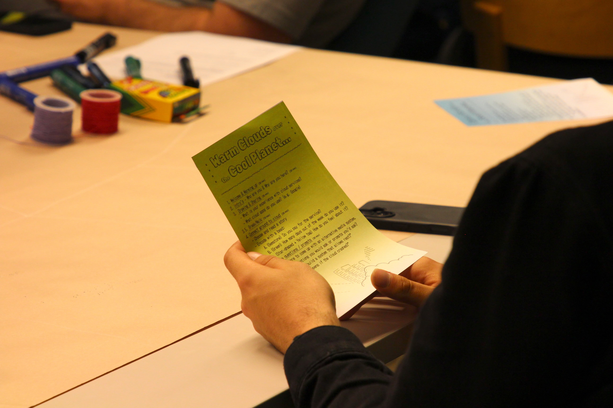
The workshop manual that outlined the schedule.
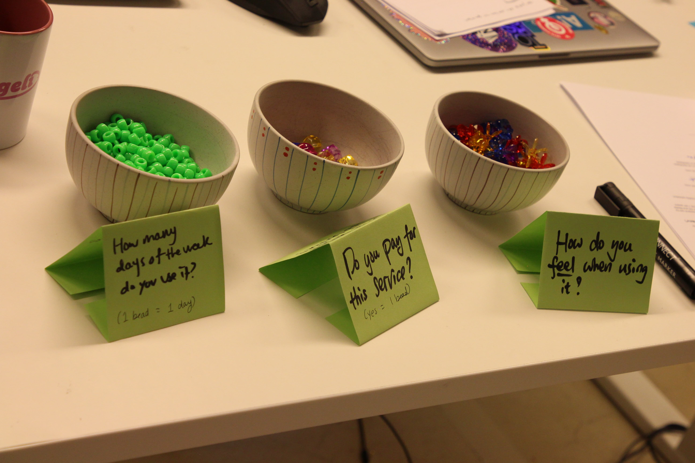
Ceramic bowls holding colored beads and prompt cards.
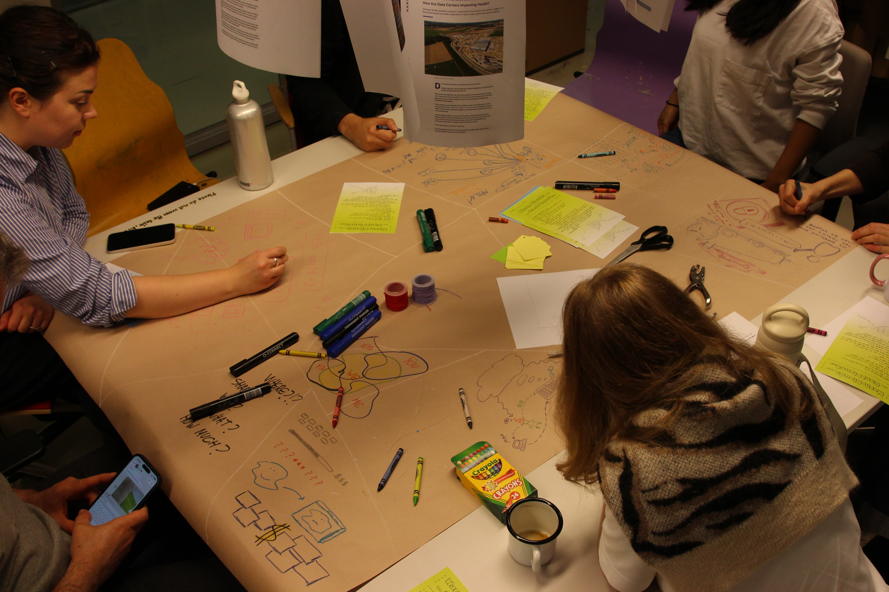
Participants drawing their personal experiences with cloud services on large paper during the Ground/Field phase.
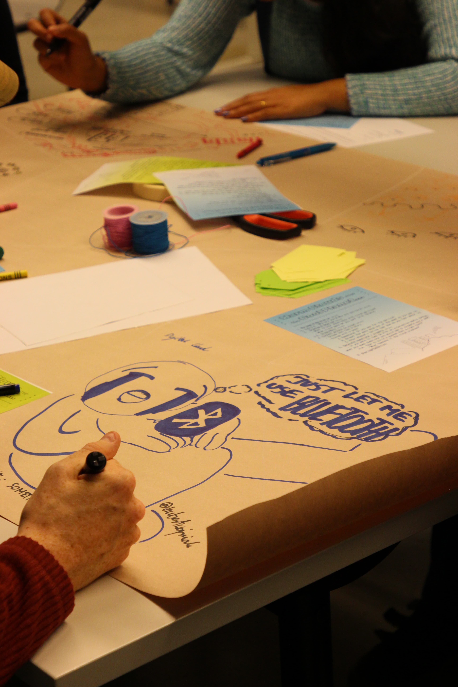
Close-up of one of the drawings.
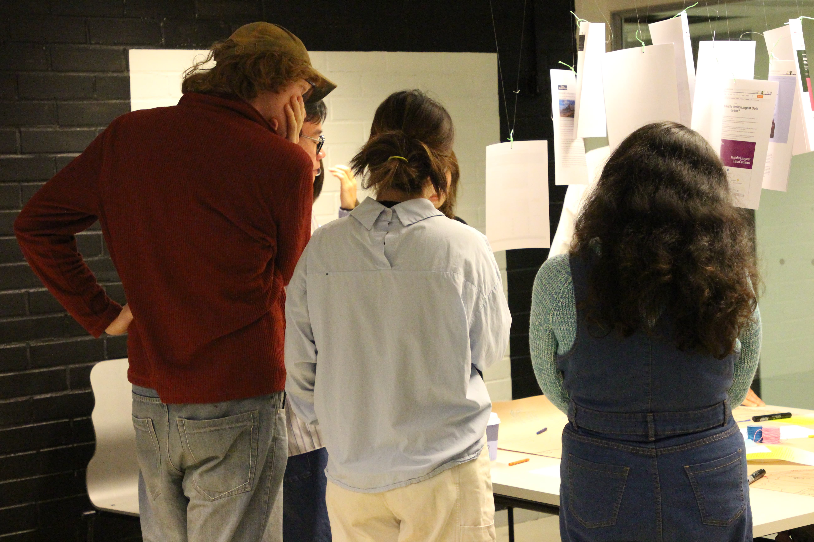
Field Trip phase: participants sharing and reading each other's drawings.
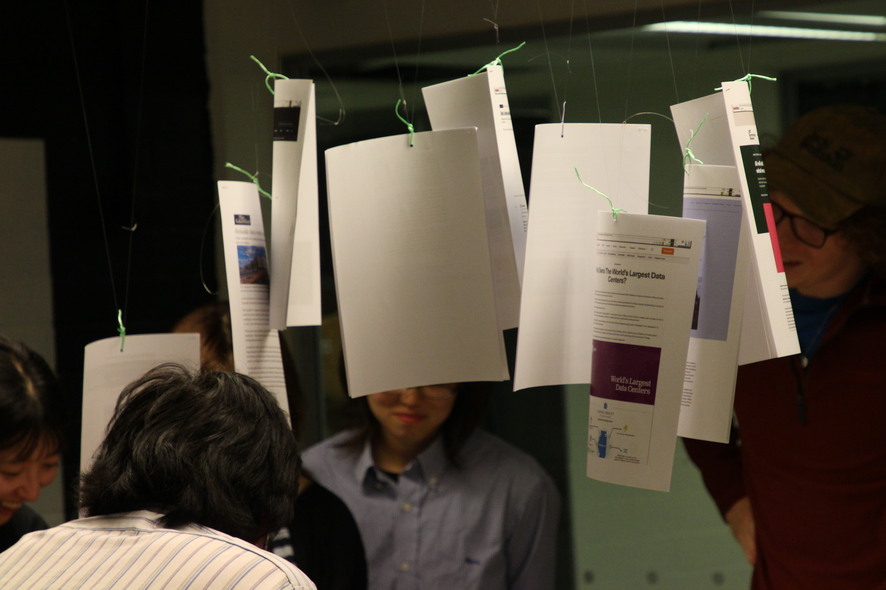
News articles are hung overhead for participants to read.
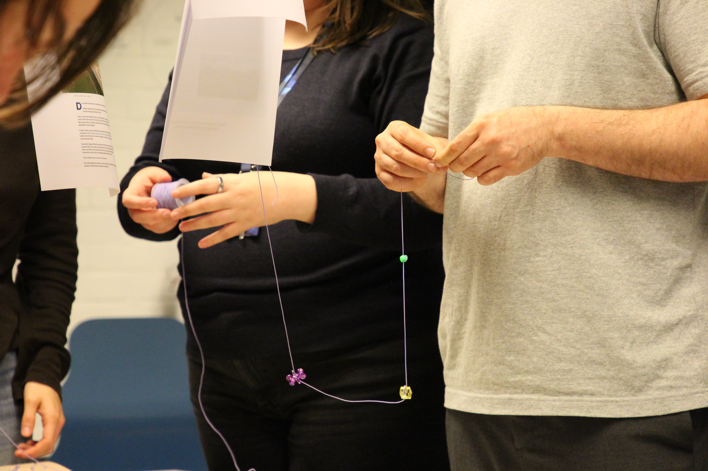
Participants thread strings with beads to connect news articles to the ground.
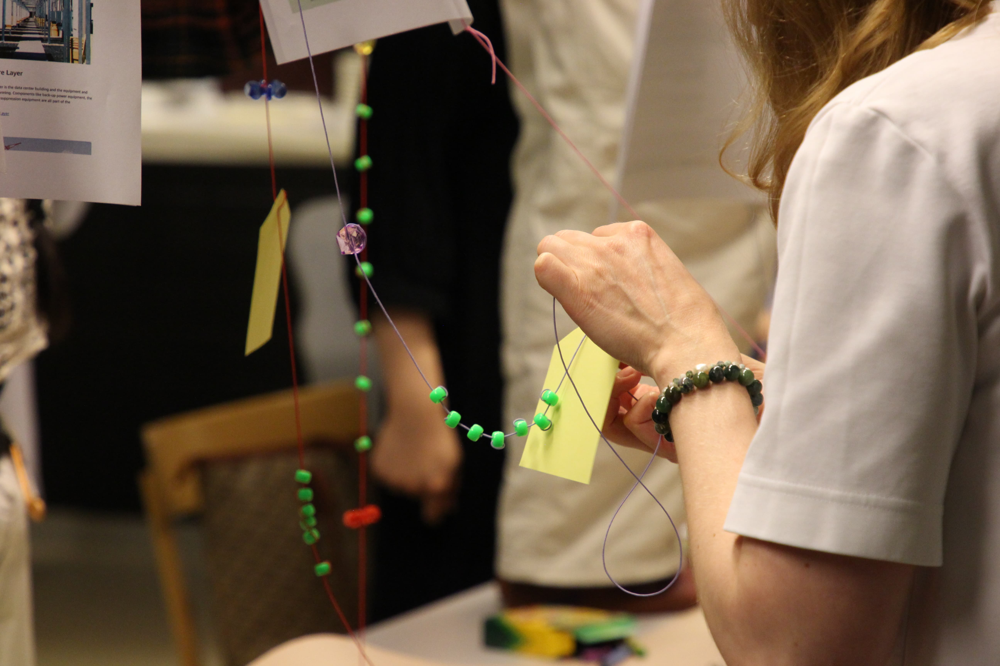
Beads, depending on color and shape, encode different aspects of a participant's relationship to a cloud service.
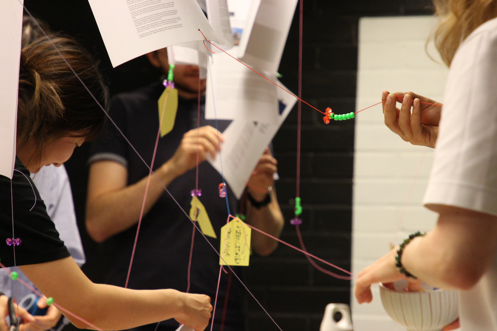
Ground→Cloud phase: participants physically connecting their beaded strings to the hanging overhead structure.
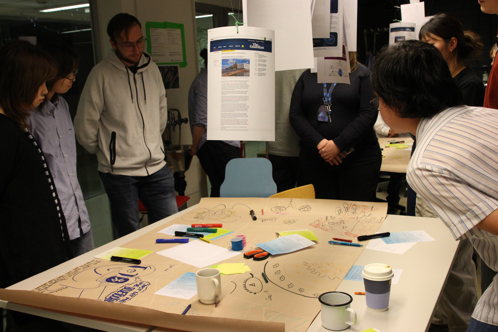
The collective cloud structure taking shape as more strings are added.
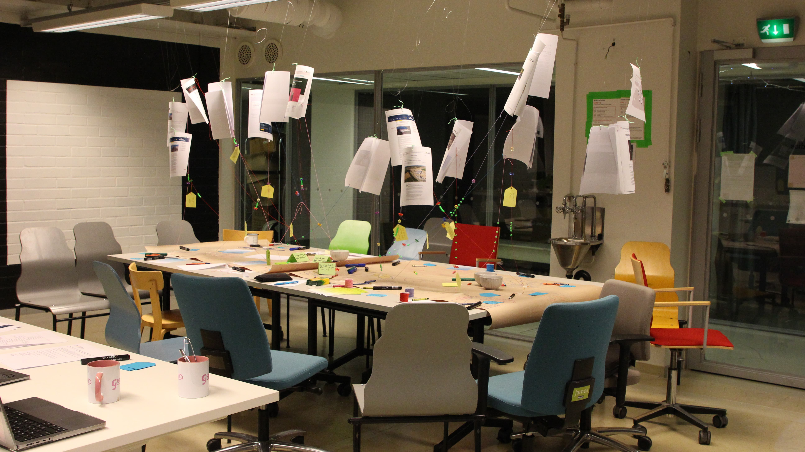
Final outcome of our cloud-ground map.
The collective cloud structure after the workshop — a physical data visualization made with paper, string, and beads. Helsinki Design Week / Designs for Cooler Planet, Space 21, Espoo, 2026.
Programme
Reflections
I was pleasantly surprised by how diverse the participants were. Their backgrounds included AI engineering, software engineering, creative sustainability, new media, visual design, and film. Participants openly related to one another despite very different relationships to technology. Some came in positive views about AI tools, some confused, some critical, and most with mixed opinions. Yet the tactile work of drawing and threading created a shared ground. Participants shared that making something together---something heavy and abstract suddenly physical and touchable---gave them a sense of connection. Several participants mentioned that the workshop gave them hope, not because it resolved anything, but because being in the same room with others holding the same uncertainties felt less lonely than facing them alone on a screen.
Materializing the cloud through literally hanging strings from paper, threading beads that stood in for data helped make a mythologized subject feel real and grounded. One participant noted that the craft made the topic less threatening; another said it was refreshing to be somewhere they didn't feel tempted to check their phone. The pattern that emerged from participants' beads was interesting. Many associated negative emotion with services they were most dependent on (either they paid for that service or used it almost every day). A tension between convenience and cost ran through many of the discussions. There was a sense that the systems pressure us into shortcuts we don't fully choose.
Prompts for a speculative alternative cloud
Generated by participants during Cloud Watching. These will become the starting point for the next workshop: Alternative Media Feed Design.